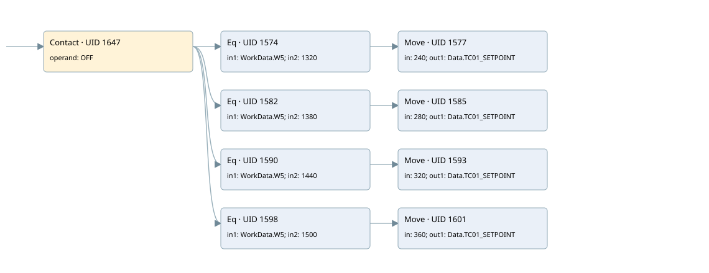

dryout warm second ramp
burner control · 검색 색인 순서 23 · 원본 내부 NID 추정 22
백업 PLF 원본의 2708086 바이트 위치에서 복원한 XML. 검색 문서 1876의 객체 키 16102200f710000000000000와 연결했다. 이름 해석 17/17개. 남은 RefId는 상수 또는 미해석 참조다.
연결 구조 다시 그리기
원본 Part/PCon/Wire를 이용한 연결도다. TIA 화면의 래더 배치 또는 실행 결과를 재현한 그림은 아니다. 핀 연결은 아래 표와 원본 XML을 기준으로 읽는다. 노드 위에 마우스를 두면 피연산자 이름을 볼 수 있다.

접점·코일·블록과 피연산자
| Part UID | Gate | Negated 핀 | 연결 피연산자 |
|---|---|---|---|
| 1647 | Contact | operand = OFF | |
| 1574 | Eq | in1 = WorkData.W5; in2 = 1320 | |
| 1577 | Move | in = 240; out1 = Data.TC01_SETPOINT | |
| 1582 | Eq | in1 = WorkData.W5; in2 = 1380 | |
| 1585 | Move | in = 280; out1 = Data.TC01_SETPOINT | |
| 1590 | Eq | in1 = WorkData.W5; in2 = 1440 | |
| 1593 | Move | in = 320; out1 = Data.TC01_SETPOINT | |
| 1598 | Eq | in1 = WorkData.W5; in2 = 1500 | |
| 1601 | Move | in = 360; out1 = Data.TC01_SETPOINT |
접점 경로를 펼친 조건식
Contact·O/A·비교기의 원본 연결을 읽기 쉽게 펼친 보조 해석이다. POWER는 전원 레일 시작을 뜻한다. 호출 블록·에지·타이머의 내부 동작과 다중 쓰기 순서는 이 표로 실행 검증하지 않았다. 미해석 핀과 RefId는 원문 연결표에서 확인한다.
| UID | 동작 | 대상 | 원본 접점 경로 | 내용 |
|---|---|---|---|---|
| 1577 | Move | Data.TC01_SETPOINT | (OFF AND [WorkData.W5 = 1320]) | Move 입력 240 |
| 1585 | Move | Data.TC01_SETPOINT | (OFF AND [WorkData.W5 = 1380]) | Move 입력 280 |
| 1593 | Move | Data.TC01_SETPOINT | (OFF AND [WorkData.W5 = 1440]) | Move 입력 320 |
| 1601 | Move | Data.TC01_SETPOINT | (OFF AND [WorkData.W5 = 1500]) | Move 입력 360 |
원본 배선 연결
| Wire UID | 동일 Wire 연결 끝점 |
|---|---|
| 1649 | Powerrail {} ↔ Part 1647.in |
| 1621 | ORef 1604 (OFF) ↔ Part 1647.operand |
| 1648 | Part 1647.out ↔ Part 1574.pre ↔ Part 1582.pre ↔ Part 1590.pre ↔ Part 1598.pre |
| 1622 | ORef 1605 (WorkData.W5) ↔ Part 1574.in1 |
| 1623 | ORef 1606 (1320) ↔ Part 1574.in2 |
| 1624 | Part 1574.out ↔ Part 1577.en |
| 1626 | ORef 1607 (240) ↔ Part 1577.in |
| 1627 | Part 1577.out1 ↔ ORef 1608 (Data.TC01_SETPOINT) |
| 1628 | ORef 1609 (WorkData.W5) ↔ Part 1582.in1 |
| 1629 | ORef 1610 (1380) ↔ Part 1582.in2 |
| 1630 | Part 1582.out ↔ Part 1585.en |
| 1632 | ORef 1611 (280) ↔ Part 1585.in |
| 1633 | Part 1585.out1 ↔ ORef 1612 (Data.TC01_SETPOINT) |
| 1634 | ORef 1613 (WorkData.W5) ↔ Part 1590.in1 |
| 1635 | ORef 1614 (1440) ↔ Part 1590.in2 |
| 1636 | Part 1590.out ↔ Part 1593.en |
| 1638 | ORef 1615 (320) ↔ Part 1593.in |
| 1639 | Part 1593.out1 ↔ ORef 1616 (Data.TC01_SETPOINT) |
| 1640 | ORef 1617 (WorkData.W5) ↔ Part 1598.in1 |
| 1641 | ORef 1618 (1500) ↔ Part 1598.in2 |
| 1642 | Part 1598.out ↔ Part 1601.en |
| 1644 | ORef 1619 (360) ↔ Part 1601.in |
| 1645 | Part 1601.out1 ↔ ORef 1620 (Data.TC01_SETPOINT) |
식별자 해석 근거 17개
| ORef UID | RefId | 이름 | IdentXmlPart 파일 | 해석 방법 |
|---|---|---|---|---|
| 1604 | 80 | OFF | 0582-IdentXmlPart.xml | UID/RID + search-text + NID agreement |
| 1605 | 48 | WorkData.W5 | 0585-IdentXmlPart.xml | UID/RID + search-text + NID agreement |
| 1606 | 55 | 1320 | 0586-IdentXmlPart.xml | literal candidate: UID/RID/NID + nearby named declarations + search-text agreement |
| 1607 | 173 | 240 | 0586-IdentXmlPart.xml | literal candidate: UID/RID/NID + nearby named declarations + search-text agreement |
| 1608 | 59 | Data.TC01_SETPOINT | 0585-IdentXmlPart.xml | UID/RID + search-text + NID agreement |
| 1609 | 48 | WorkData.W5 | 0585-IdentXmlPart.xml | UID/RID + search-text + NID agreement |
| 1610 | 191 | 1380 | 0586-IdentXmlPart.xml | literal candidate: UID/RID/NID + nearby named declarations + search-text agreement |
| 1611 | 193 | 280 | 0586-IdentXmlPart.xml | literal candidate: UID/RID/NID + nearby named declarations + search-text agreement |
| 1612 | 59 | Data.TC01_SETPOINT | 0585-IdentXmlPart.xml | UID/RID + search-text + NID agreement |
| 1613 | 48 | WorkData.W5 | 0585-IdentXmlPart.xml | UID/RID + search-text + NID agreement |
| 1614 | 53 | 1440 | 0586-IdentXmlPart.xml | literal candidate: UID/RID/NID + nearby named declarations + search-text agreement |
| 1615 | 195 | 320 | 0586-IdentXmlPart.xml | literal candidate: UID/RID/NID + nearby named declarations + search-text agreement |
| 1616 | 59 | Data.TC01_SETPOINT | 0585-IdentXmlPart.xml | UID/RID + search-text + NID agreement |
| 1617 | 48 | WorkData.W5 | 0585-IdentXmlPart.xml | UID/RID + search-text + NID agreement |
| 1618 | 196 | 1500 | 0586-IdentXmlPart.xml | literal candidate: UID/RID/NID + nearby named declarations + search-text agreement |
| 1619 | 177 | 360 | 0586-IdentXmlPart.xml | literal candidate: UID/RID/NID + nearby named declarations + search-text agreement |
| 1620 | 59 | Data.TC01_SETPOINT | 0585-IdentXmlPart.xml | UID/RID + search-text + NID agreement |
검색 코드 보조 자료
참조 명칭을 찾기 위한 자료이며 실행 순서나 AND/OR 관계는 위 연결표로 확인한다.
"off" "workdata".w5 1320 move 240 "workdata".w5 1380 move 280 "data".tc01_setpoint "workdata".w5 1440 move 320 "data".tc01_setpoint "workdata".w5 1500 move 360 "data".tc01_setpoint "data".tc01_setpoint